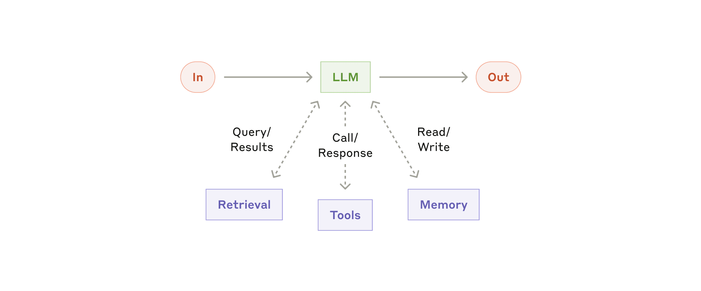
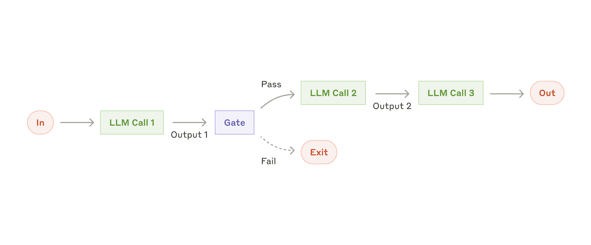

开篇
Workflow 算不算 Agent？Agent 能自主规划是不是就更先进？多 Agent 系统是不是更高级？
很多人陷进了一个误区——复杂度崇拜。觉得越复杂的系统越厉害，越多的 Agent 越智能。
但 Anthropic 的这篇《Building Effective AI Agents》讲得非常清楚。真正的区别，不在有没有大模型——而在决策权归谁。
定义区分
行业内对"智能体（Agent）"的定义众说纷纭。Anthropic 将所有结合了大模型和工具的系统统称为"智能体系统（Agentic Systems）"，并在架构上做出了一个至关重要的区分：
Workflow（工作流）
通过预先定义的代码路径来编排 LLM 和工具的系统。它的执行路径是确定性的。
Agent（智能体）
由 LLM 动态自主地指挥整个流程和工具使用，系统本身保持对任务达成方式的控制权。
核心区别：决策权归谁
Workflow 和 Agent 的本质区别，在于谁拥有决策权。
| Workflow | Agent | |
|---|---|---|
| 路径 | 人写死的 | 模型决定 |
| 步骤 | 提前设计好的 | 可以动态调整 |
| 模型角色 | 执行者 | 决策者 |
| 特点 | 可控、可复现、好调试 | 自主性强，不确定也强 |
同样的问题，今天一个答案，明天一个逻辑。企业怎么用？业务怎么验收？
如何抉择
Anthropic 强烈建议：从最简单的方案开始，只有在确实需要时才增加复杂度。
路径明确、步骤固定 → 流程问题
如果任务有明确的执行路径，每一步都是固定的，用 Workflow。
目标稳定、可枚举 → 流程问题
如果目标是稳定的、清晰的、可枚举的，不需要动态策略，就不要引入 Planning。
以上都不是 → 才考虑 Agent
只有当任务路径无法通过硬编码实现，或者需要多轮操作时，才轮到 Agent。
不要把流程问题做成模型问题。
最佳路径是什么？
Anthropic 给了我们一个清晰的演进路线：
增强型 LLM
提示词写清楚，能检索，能调用基础工具，能记住上下文。很多场景，到这一步已经够了。
Workflow
当任务有明确步骤时用 Workflow。路径明确、目标稳定、可枚举。
Agent
出现探索型任务，任务路径无法通过硬编码实现，或者需要多轮操作时，再引入 Agent。
复杂系统，不是设计出来的。是从简单系统一步一步迭代出来的。
增强型 LLM
LLM 已经可以通过获取检索（RAG）、工具（Tools）和记忆（Memory）的增强，主动生成搜索查询、选择工具并决定保留哪些信息。

增强型 LLM：基础构建块，具备检索、工具和记忆能力
Workflow 详解
当任务有明确步骤时用 Workflow。根据任务特点，有 5 种常见的 Workflow 模式：
1. Prompt Chaining（提示链）
运行逻辑：将复杂任务拆解为序列化的独立步骤，上一个 LLM 调用的输出直接作为下一个 LLM 调用的输入。开发者可以在中间步骤加入程序化的逻辑检查（Gate）以确保流程未跑偏。
适用场景：任务可以被干净利落地拆分为固定子任务的场景。目的是通过降低单次 LLM 调用的难度来换取更高的准确率。
案例：先生成营销文案，再将其翻译为其他语言；或者先让模型写提纲，程序检查提纲合规后，再让模型根据提纲写正文。

提示链工作流：将任务分解为顺序步骤
2. Routing（路由）
运行逻辑：接收输入后，通过分类机制将其导向专门的后续任务、提示词或工具。
适用场景：当任务存在明显的类别区分，且不同类别需要不同的处理逻辑时。
案例：智能客服，根据用户的意图不同，是售前咨询、售后反馈，进入下游不同的路径

路由工作流：将输入分类并引导至专门处理流程
3. Parallelization（并行化）
运行逻辑：如果子任务彼此独立，或者希望从多个视角分析问题，提高结果的置信度，那就并行。一起跑，最后再汇总。
适用场景：需要极高运行速度，或者需要多视角交叉验证的高置信度场景。
案例：并发执行护栏（一个模型正常回答，另一个模型并行审查是否违规）；或者代码审查时，多线程并发检查以寻找漏洞

并行化工作流：同时处理任务并聚合结果
4. Orchestrator-Workers（编排器-工作者）
运行逻辑：一个中央 LLM（编排者）动态地将大任务拆解，分配给多个 LLM（工作者），最后汇总它们的结果。
适用场景：与并行处理类似，但子任务是无法预先定义的。它依赖编排者根据具体的输入，动态决定需要拆出多少个子任务。
案例：编写涉及多个文件复杂修改的代码产品；或需要从多个来源持续收集和分析信息的复杂搜索任务。

编排器-工作者工作流：中心节点动态分解和委派任务
5. Evaluator-Optimizer（评估器-优化器）
运行逻辑：在一个循环中，一个 LLM 生成响应，另一个 LLM 充当评估者提供反馈，前者根据反馈不断修改优化。
适用场景：具备明确的评估标准，且迭代修改能带来显著价值的场景。
案例：文学翻译（评估者可以捕捉初始翻译中遗漏的细微语境并提出修改意见）；做 Deep Research。要不要继续检索？信息够不够？需要一个评估节点来判断

评估器-优化器工作流：迭代改进响应质量
Agent
出现探索型任务，任务路径无法通过硬编码实现，或者需要多轮操作时，再引入智能体。
运作机制：接收用户的指令或对话后，智能体在一个持续的循环中自主规划步骤、调用工具，并在每一步执行后从环境（如工具返回结果、代码执行报错）中获取"事实真相（Ground truth）"以评估进度，直到满足停止条件或完成任务。

自主 Agent：基于环境反馈循环使用工具
风险与约束：自主性意味着高成本和错误累积的风险。因此必须在沙盒环境中进行极其详尽的测试，并设置妥善的护栏（如最大迭代次数限制）。
构建生产级智能体的三大核心原则
保持极简（Simplicity）
架构设计越简单越好。
强制透明（Transparency）
在应用中显式地展示智能体的规划和思考步骤。
完善文档与测试（Documentation and testing）
精心打磨你的"智能体-计算机接口 ACI（Agent-Computer Interface）"
总结
在 LLM 领域取得成功，并不是去比拼谁建的系统最复杂、最炫酷，而是为业务需求找到最匹配的系统。
从简单的提示词做起，建立完善的评估机制，只有在基础方案碰壁时，才去组合上述的路由、并行或反思模式，最后再去触碰高成本、高自治的完全体 Agent。
Workflow 不是低级方案。Agent 也不是高级标签。不管黑猫白猫，能抓老鼠的就是好猫。
真正拉开差距的——不是你堆了多少 Agent。而是你能不能设计好决策权的边界。
Anthropic《Building Effective AI Agents》